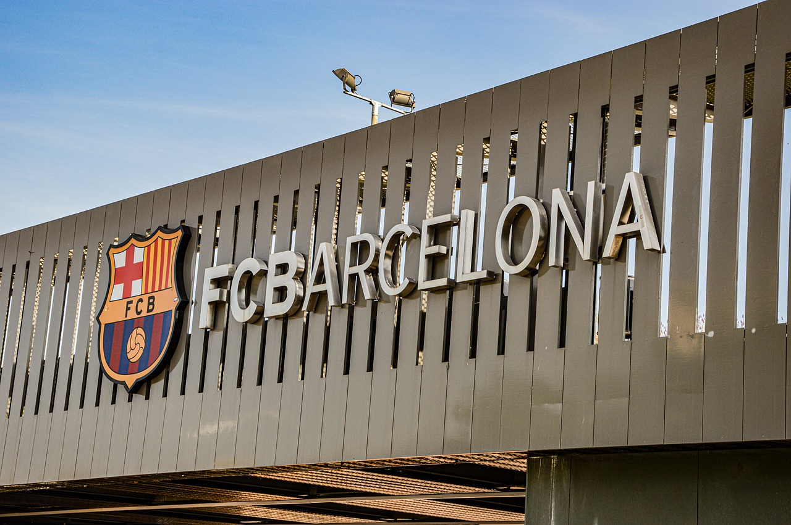

Real Madrid johtaa sarjaa 11 pisteellä ja todella vankasti kiinni mestaruudessa. Girona on ollut suuri yllätys tällä kaudella, koska he ovat tällä hetkellä kolmantena sarjassa. Sarjasta putoaa kolme viimeistä joukkuetta, Almeria on jo varmasti tippunut. Granada on 10 pistettä perässä Celta Vigoa, joten on myös hyvin todennäköistä, että Granada tippuu sarjasta. Cadiz on vain viisi pistettä perässä Celta Vigoa, joten he todella taistelevat sarjassa pysymisestä. La ligan maalipörssiä johtaa Gironan Artem Dovbyk, joka on tehnyt 19 maalia.
Celta Vigo hävisi ottelun, joten he eivät saaneet lisäeroa putoamiseen. Cadiz ja FC Mallorca pelasivat tasapelin, joten molemmat saivat tärkeän pisteen. Granada voitti oman ottelun, joten he elättelevät vielä toivoita sarjassa pysymisestä.
Nämä kaikki pelit ovat todella tärkeitä putoamisen kannalta, koska sarja on todella tiukka putoamisen kannalta.